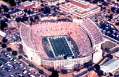

With a strong lineup of more than 60 radio affiliates, the Auburn Network’s coverage of Auburn Football begins two hours prior to kickoff. The broadcast begins with the “Tiger Tailgate Show”, a two-hour pregame show with studio host Paul Ellen, play-by-play announcer Jim Fyffe, color analyst Charlie Trotman and sideline reporter Quentin Riggins. The show is chock full of features, live guests, and more. On home games, Ellen, Fyffe, Trotman and Riggins involve a live audience just outside Jordan-Hare Stadium.
Paul Ellen gives a complete look at the SEC standings and schedules on “The SEC Report” and then, feature reporter Rod Bramblett talks with head coach Tommy Tuberville at the stadium to get his exclusive last-minute thoughts on the game.
Then, Auburn fans listen for Jim Fyffe’s play-by-play and await his legendary cries of “TOUCHDOWN AUBURN!” Throughout the broadcast, listeners are kept abreast of other scores and developments from Paul Ellen at Auburn Network Control. 
Following the game, “The Lockerroom Report” features live interviews with Auburn players and Coach Tommy Tuberville from the Auburn lockerroom. Then, it’s back to Auburn Network Control for a live call-in/scoreboard show featuring calls from across the Southeast and scores from across the nation. Following all home games, an Auburn assistant coach is a live studio guest and gives the “inside story” on what happened at the game.
All in all, the Auburn Network’s broadcast day is the most complete coverage of the Tigers, anywhere!
Jordan-Hare Radio sm

Jordan-Hare Radio delivers the football radio broadcast
throughout the concourses of Jordan-Hare Stadium via a network
of speakers located at concession stands and restrooms.
This closed-circuit delivery of the Auburn Network's radio
broadcast keeps fans at Jordan-Hare in touch with the game
even when not in their seats.
Basketball

With statewide coverage on radio, the Auburn Network delivers the excitement of Auburn basketball to thousands each and every game via over 45 affiliate stations. In addition, fans outside of the Auburn Network’s over-the-air coverage can listen to games live, via the Auburn Network On-Line internet site.
Play-by-play announcer Jim Fyffe enters his 19th year as “Voice of the Tigers” and provides the most complete coverage of the Tigers anywhere along with Rod Bramblett, Andy Burcham and Paul Ellen.

Baseball
Auburn boasts one of the top collegiate baseball programs in the country and the Auburn Network is proud to deliver coverage of Auburn baseball to over 20 affiliate stations throughout the state of Alabama, as well as on the internet.
The Auburn Network provides complete coverage of 24 of the Tigers’ Southeastern Conference games, plus all post-season games.

On Thursday evenings, Tiger fans know that Auburn Network radio stations are the source for information on Tiger athletics. Tiger Talk, an hour-long prime time call-in/talk show, features in-season appearances with head coaches Tommy Tuberville, Cliff Ellis, Hal Baird and other Auburn coaches as well as various other guests and personalities.
The show, hosted by Rod Bramblett, originates from Auburn Network Control and, on occasion, on location in front of live audiences. A toll-free number allows callers from around the Southeast to be a part of the show. A lineup of 50 affiliates throughout the state and parts of Georgia and Tennessee provide coverage of the show. The show airs for 30 consecutive weeks.
For information on advertising, please contact:
Jon Cole
jcole@aunetwork.com
334-826-2929
or
Steve Witten
witten@aunetwork.com
334-826-2929
|